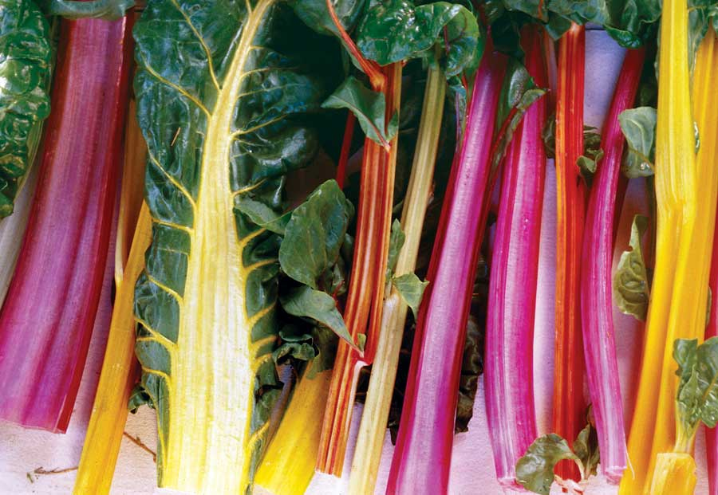

By far the most popular vegetable ever grown by the Seed Savers Exchange, ‘Rainbow’ chard was offered for many years by the famous English seed company Thompson & Morgan. But when the yellow and orange colors were lost, ‘Rainbow’ chard was discontinued from the company’s catalog. After many years of searching, the Seed Savers Exchange discovered this beautiful variety still being offered by Digger’s Garden Club in Australia, where it is called ‘Five-color’ silverbeet. Its brilliant colors include red, pink, white, yellow and orange. ‘Five-color’ silverbeet is now one of the Exchange’s top-selling seeds.
BRAISED RAINBOW CHARD
Ingredients:
1 pound rainbow chard, leaves and stems separated
1 cup dry red wine
1 tbsp unsalted butter
1 tbsp vegetable oil
1 medium red onion, diced
1 apple, grated, skin on
1 cup vegetable stock
2 tsp wildflower honey
Sea salt and freshly ground pepper
Instructions:
Wash and cut the chard leaves across the stem into 1-inch ribbons. Trim 1/2 cup of the chard stems into 2-inch-long-by-1/4-inch-thick strips. Heat the butter and vegetable oil in a large sauté pan until the butter foaming subsides. Sauté the red onion and apple, without browning, until translucent. Toss in the chard leaf and stem and sauté for a minute with the apple and onion. Add the wine and vegetable stock all at once, and stir to cook evenly. Cook on high heat until the chard is tender, with the liquid evaporating by about two-thirds. When the chard is tender, remove the pan from the heat, and stir in the wildflower honey. Season to taste with salt and pepper. Serve immediately, or cool and store covered in the refrigerator for up to 3 days. Serves 2 to 4.
|
 ROSALIND CREASY Bright, crisp ‘Rainbow’ chard is one of the Seed Savers Exchange’s top-selling seeds. |
|
|